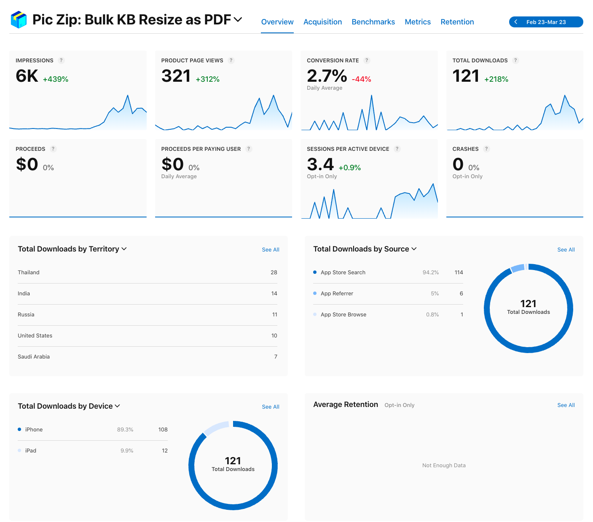
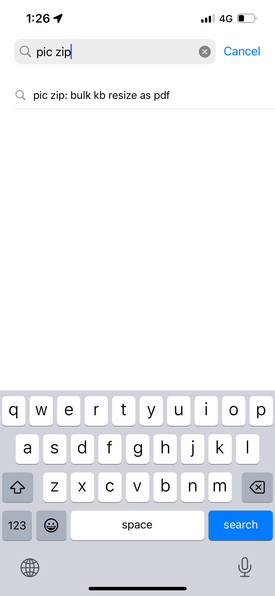

一个简单iOS应用上架经历 & 后台流量 & 收入
这个App是做啥的? / TL;DR
App可以控制图片压缩文件大小上限,同时以pdf,jpg,zip格式进行分享. 它能帮助需要整理,归档,压缩图片的用户,解决大批量操作的问题,不再为各类网站的(尤其是图片)上传大小限制操心.
Pic Zip - https://apps.apple.com/app/pic-zip-bulk-kb-resize-as-pdf/id6471817020
没有广告,没有付费墙,没有水印,没有接入任何互联网接口,你可以离线使用它. 开发者需要的只是你的评分,鼓励,反馈.
为什么要做这件事情?
"合抱之木,生于毫末; 九层之台,起于累土; 千里之行,始于足下."
2023年,我用Swift + UIKit做了一个做了一个简单的自用小工具.
后来边学边练SwiftUI,同时觉得分享这个工具能
- 帮助那些不愿上传文件,但是和我一样有压缩,管理图片需求的人.
- 帮助我理解ASO(AppStore Search Optimisation)
于是在2024.3月,我用SwiftUI在业余时间重写了以前的代码. 上架AppStore,试图窥见ASO的一点点奥秘,为以后上架更多的App铺路.
截止2024-03-25, App的流量情况如下, 暂时收入为0. 因为没有广告,内购,打赏, that's obvious. 
请不要以这种冠冕堂皇的话来搪塞"为什么",下班打游戏看剧不香吗?
好吧,如果你非要问的话: 因为愧怍. 作为一个iOS工程师,很难想象在工作几年后,仍然没有在AppStore有自己名下的App.
更重要的原因是: 以实践检验所学的同时,这件事能倒逼自己走出舒适圈,到一条更有挑战性的路上,一条"少有人走的路"上.
什么是"少有人走的路"?
作为孩童,我们都曾有这样的体会: 那些在我们眼里困难,让人不安,富有挑战性的事,如骑自行车,换灯泡,读晦涩的文献,这些在大人眼中,却是轻而易举,习以为常的小事. 我们不断地扩展自己精神和能力的边界,我们不断地习惯了这些挑战,我们不断地成长.
而进入青年时代后,大部分人的精神世界不再和身体一齐成长,或者成长及其有限. 打个比方: 在人生的RTS游戏里,自青年时代后,他们不再开矿,甚至不继续开拓战争迷雾了. 这里面有很复杂的原因,大部分是个人的选择,少部分是客观的因素.
然而,仍然有少数的人,长大后选择继续地对抗自己对外界的不适感,扩展舒适圈,克服自己的恐惧,懒惰,侥幸心. 世界则回馈他们以财富,成就,尊重.
要踏上这条"少有人走的路",除了不断地观察,思考,实践,循环往复地修订内心世界的地图,扩展精神和能力的边界外,没有其他办法. 在漫漫长路中,如果有外界的一些反馈,不论正面或负面,都能使我在这条并不轻松的旅途上,走的更坚定些.
我能如何帮忙? 我又有哪些回报?
- 在iOS AppStore 搜索
"Pic Zip", 不出意外的话你会看到如下提示,下载这个App,试用一下它的压缩,打包,导出pdf功能,并且在AppStore内评价打星,反馈使用体验. 
曾经这款App在"Pic Zip"关键字下能排进Top 3. 但是由于review和热度有限,很快掉出了榜单,这也是为什么我需要帮助的原因: 我希望借你们的力量,试图窥看ASO的门径.
- 如果你搜索不到我的App,你也可以在iPhone上直接访问下面的网址: https://apps.apple.com/app/pic-zip-bulk-kb-resize-as-pdf/id6471817020
- 在决定App排名先后时,AppStore会着重参考"90天内活跃用户打出好评的数量", 很多独立开发者上架后,除了祈祷自然流量,他们什么也不做. 这种要么超然的态度,要么是"即使我什么都不做,一切也都会好起来的"的伪乐观主义,都不是我的哲学.
- 说到回报,除了收获我诚挚的感谢外,真的比较有限: 我能做的,就是分享这段开发,上架的独立开发者经历,给诸位或作参考,或作娱资. 我会不定时在这里更新后台数据,你能在这里看到大部分"dying without a sound"独立iOS App的缩影.
对这个玩具大小的免费工具而言,这就是它最大的价值.
它也更多是后续作品的小序,是猎鹰火箭成功上天之前无数的爆炸残骸,是无数前人不断在"少有人走的路上"给后人留下的标记.
工具
- 技术栈
- SwiftUI / Swift Package Manager
- ZIPFoundation
- github page + Publish framework (landing page)
- fastlane (multi-language meta data / screenshots)
- 美术
- Figma (screenshots)
- AI icon generator
- https://unsplash.com/ (testing image)
- ASO
- onelook.com (keywords research)
- SensorTower (keywords research)
开发日志
这里是冗长且无聊的开发日志,记载了各种decision making 细节,开发者的唠叨,犯过的错误,踩过的坑,经验教训.
如果你有兴趣看完的话,那么恭喜你,这证明你
- 至少有流利的英语水平
- 大概是相关从业人员
- You are insanely BORED, which is a good thing and luxury to have.
Enjoy.